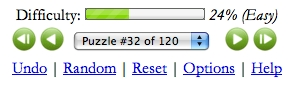
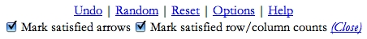

Close Help| Your goal: Find all twelve hidden marbles. | |
| Each number on top tells you how many marbles are hidden in that column. | |
| Each number on the side tells you how many marbles are hidden in that row. | |
| Arrows point to at least one marble. Not all marbles have an arrow pointing to them. | |
| If you think a square does NOT have a marble, click it once to mark it with an X. | |
| If you think a square has a marble, click it again to mark it with a marble. You win if you find the correct spots for all twelve marbles. | |
| Hover over a number to highlight the row or column. | |
| Click a number to mark the entire row or column with Xs. | |
| Click an arrow to show its path. | |
| At the bottom of the puzzle, you will find its difficulty. 0% is easiest, 100% is hardest. There are 120 puzzles in all. Click the arrows to change puzzles. Or, select a puzzle directly using the drop down list. Click "Random" to play a puzzle at random. Click "Reset" to clear the board and start again. Click "Undo" or hit CTRL-Z to undo your last move. |  |
| While you are playing, the game will automatically gray out the arrows and counts that are satisfied by your marbles. You can turn this behavior on and off by clicking "Options". |  |
Close Help |